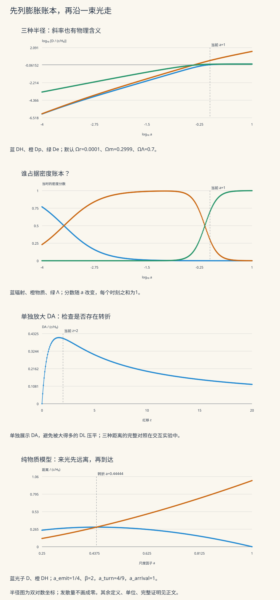

本页目录
宇宙学 I · FRW、Friedmann 方程与光的距离
前置：等效原理与曲率、理想流体、常微分方程与定积分。目标：从对称性写出度规，从 Einstein 方程推出膨胀，再沿光路算出红移、距离和视界。
同一个遥远星系可以有几种不同的“距离”。我们在问不同的问题：今天的空间切片上隔多远、光走了多久、它看起来多亮、它占多大角度。本页把这些问题接到同一个尺度因子上。
学习层：先沿一束光走，再给宇宙列账
1. 一个能手算的反直觉例子
考虑平坦、只有无压物质的膨胀宇宙，取今天尺度因子为1。在 \(a_e=1/4\) 时，让一束光在距离原点两倍当时 Hubble 半径处朝原点发射。
光在每位沿途共动观察者的局部标架中都以 \(c\) 朝内走；然而，用同一宇宙时刻的尺子比较光子与原点的固有距离，这个距离起初仍会增加。随后它达到最大值，最后在 \(a=1\) 时到达原点。下面会逐步算出：
这已经足以否定“Hubble 半径就是所有光都过不来的边界”。要判断能否通信，需要整条光路，而不只是某一时刻的 \(H\)。
2. 辨认输入、输出和模型边界
实验的前两个模式使用平坦三组分背景：
未带时间参数的 \(\Omega_i\) 都指今天的密度参数，\(a_0=1\)。辐射与物质之间不交换能量，暗能量固定为宇宙学常数；本实验没有空间曲率、随时间变化的暗能量、粒子种类转换或结构扰动。它适合检验背景方程，不能直接替代精密宇宙学拟合。
输入是 \(\Omega_r,\Omega_m,H_0\)，以及当前 \(a\) 或观测红移 \(z\)。实验明确用剩余量定义 \(\Omega_\Lambda\)，不会把不合法的组分悄悄归一化。数值域要求每个非零组分至少为 \(10^{-6}\)；更小组分应使用另行验证的数值设置。第三个光子模式固定为纯物质背景，只有发射尺度因子和初始距离比两个输入。
所有无量纲距离乘 \(c/H_0\)，所有无量纲时间乘 \(1/H_0\)。默认的 \(H_0=70\ {\rm km\,s^{-1}Mpc^{-1}}\) 只是教学输入，对应
3. 实验：先预测，再揭示每一行计算
依次完成三件事：在纯物质和纯辐射预设中核对解析答案；在“物质＋辐射，无 Λ”中观察遥远未来由谁主导；最后切到光子与红移距离模式，把图上各量对应到下文的定义。
无需 JavaScript 的静态账本。 前五行使用默认平坦教学模型 \(\Omega_r=0.0001,\Omega_m=0.2999,\Omega_\Lambda=0.7\)，并取 \(a=1\)。距离单位是 \(c/H_0\)，时间单位是 \(1/H_0\)。
| 量 | 数值 | 含义 |
|---|---|---|
| 默认 Hubble 半径 | 1 | 瞬时 HD=c |
| 默认粒子视界 | 3.23968366 | 过去共形积分 |
| 默认事件视界 | 1.14067037 | 未来共形积分 |
| 默认 H₀t | 0.963746554 | 从模型大爆炸端点算起 |
| 默认 q | -0.54995 | 负值：当前尺度因子加速 |
| 纯物质 z=3：DC | 1 | 今天径向共动距离 |
| 纯物质 z=3：DA | 0.25 | 角直径距离 |
| 纯物质 z=3：DL | 4 | 光度距离 |
| 纯物质 z=3：回望时间 | 0.583333333 | H₀ × 时间 |
| 默认光子 a_turn | 0.444444444 | 最大固有距离事件 |
| 默认光子 a_arrival | 1 | 从 Hubble 半径外到达原点 |
纯物质在 \(a=1\) 时，Hubble 半径为1，粒子视界为2，未来共形积分发散，因此没有有限事件视界。纯辐射的前两者都为1；纯 de Sitter 平坦片的 Hubble 半径和事件视界都为1，但过去共形积分发散，且本平坦片不定义有限大爆炸年龄。这些“发散”和“未定义”都不是数值零。

半径图使用双对数坐标，以免把早期的小尺度压成零；距离和光路径图使用线性坐标。每条线连接完整实验网格，表格保留全部节点。图中不画发散的量，并不等于把它设成零。
4. 数值读数也要说明证据
过去与未来的无穷端点先由解析式判断收敛性，再对有限积分计算。自适应 Simpson 对一个面板先算粗近似 \(S\)，再二分得到 \(S_2\)，用
估计局部误差和修正积分。常数15来自光滑情形下 Simpson 主误差随步长的四次幂缩小。它是嵌入式估计，不是对任意被积函数都成立的严格误差区间。
本实验单位区间上的绝对预算是 \(2\times10^{-13}\)，相对预算是 \(2\times10^{-11}\)；绝对预算按区间宽度分配。当前账本保留每个面板的五个函数值、粗细近似、修正值和达标状态。达到深度或面板上限而未达标时，状态为“未收敛”，主结果留空；诊断表保留尚未获接受的近似。数学发散由端点论证给出，不能从计算失败推出。
1. FRW 度规：对称性允许怎样的宇宙？
1.1 均匀与各向同性是背景假设
均匀指空间位置之间没有优先点，各向同性指共动观察者周围没有优先方向。它们约束的是理想化的大尺度背景；恒星、星系与密度扰动并没有因此消失。背景是否足够准确，需要用观测和扰动理论检验。
用沿背景流体运动的观察者建立共动坐标。他们的固有时就是宇宙时间 \(t\)。本页约定 \(a(t)\) 无量纲，径向坐标 \(r\) 有长度单位，曲率参数 \(K\) 有长度的负二次方单位：
空间切片的三维 Ricci 标量为
\(K>0,=0,<0\) 分别对应正、零、负常曲率的局部几何。仅凭这个局部度规不能唯一决定整个空间的拓扑。有些书把曲率写成 \(k=0,\pm1\)，把长度移进尺度因子或曲率半径；不能把不同的量纲约定混用。
引入径向共动固有坐标
于是 \(r=S_K(\chi)\)，度规变成
正曲率情形原 \(r\) 坐标的覆盖范围有限；\(\chi\) 形式更便于讨论径向距离。实验均取 \(K=0\)。
1.2 Hubble 定律是哪一种速度？
两个固定共动坐标的观察者，在同一 \(t\) 切片上的径向固有距离为
若物体还有特殊运动，\(\chi\) 不再固定，就有
\(a\dot\chi\) 是径向局域特殊速度；\(HD\) 是相对于这套切片的膨胀贡献。遥远两点的 \(\dot D\) 并不是在同一个局部惯性系里直接测出的相对速度，所以 \(HD>c\) 本身不违背局域光速限制。
气球表面可帮助想象距离随 \(a\) 共同缩放，但不要从比喻附加一个必须存在的外部中心。共动、特殊运动、局域多普勒效应可以在同一几何描述中共存。
2. 从度规推出 Friedmann 方程
2.1 统一压力、密度和 Λ 的单位
本页 \(\rho\) 是质量密度，能量密度为 \(\rho c^2\)，压力为 \(p\)。四速度满足 \(u^\mu u_\mu=-c^2\)，理想流体能动张量为
共动系中 \(u^t=1,\ u_t=-c^2\)，所以
\(T_{tt}\) 不是 \(\rho c^2\)：这里时间坐标是 \(t\)，而不是 \(ct\)。宇宙学常数可保留在几何侧，
也可移到流体侧，定义
以下用总 \(\rho,p\)，已包含 Λ 流体。 右侧已计入 Λ 时，左侧不再另加它。
2.2 把曲率计算拆到可以复核
写 \(g_{ij}=a^2\gamma_{ij}\)，其中 \(\gamma_{ij}\) 与时间无关。Christoffel 定义给出含时间的非零分量：
纯空间连接等于 \(\gamma\) 的连接。时间方向的 Ricci 分量为
空间分量按静态空间曲率与时间缩放分组。静态部分是 \(2K\gamma_{ij}\)；含时间的项依次给出
相加即得
用 \(g^{tt}=-1/c^2\)、\(g^{ij}g_{ij}=3\) 收缩，再求 Einstein 张量：
2.3 约束、加速度与连续性
代入 \(G_{\mu\nu}=8\pi G T_{\mu\nu}/c^4\)：
用第一式消去后式的后两项：
压力也参与引力源。若总 \(\rho+3p/c^2<0\)，尺度因子可以加速；Λ 的负压力正好能提供这种贡献。能量局域守恒 \(\nabla_\mu T^{\mu\nu}=0\) 则给出
在共动体积 \(V\propto a^3\) 中，它可读作
这是膨胀中的流体能量账本，不要求动态宇宙存在一个定义良好、守恒的全局总能量。对本页 \(H>0\) 的膨胀支，第一 Friedmann 方程加连续性方程也可推出加速度关系，因此三式并非三个独立条件。
牛顿球壳法能给出无压情形相似的 \(H^2\) 方程，是检查直觉的办法；它本身既没有推导压力项，也没有建立时空曲率。不能把完整几何仅仅替换成“宇宙总机械能的正负”。
3. 宇宙组分怎样交接？
3.1 状态方程控制稀释
若一组分独立守恒，且 \(p=w\rho c^2\) 中 \(w\) 为常数，则
| 组分 | \(w\) | 质量密度随 \(a\) 的变化 | 物理来源 |
|---|---|---|---|
| 无压物质 | \(0\) | \(a^{-3}\) | 固定粒子数分布到更大体积 |
| 辐射 | \(1/3\) | \(a^{-4}\) | 体积稀释，再乘每个光子的红移损失 |
| 宇宙学常数 | \(-1\) | 常数 | 压力恰为负能量密度 |
定义 \(\rho_{\rm crit,0}=3H_0^2/(8\pi G)\)，并令
于是一般背景方程为
曲率可在 \(H^2\) 的代数账本中记一项，但它不是额外的物质流体。平坦实验固定 \(\Omega_K=0\)。当时的密度分数为
因此今天的少数项可能在早期占主导。辐射、物质都非零时，相等的尺度因子为
物质、Λ 都非零时，两者相等于 \(a=(\Omega_m/\Omega_\Lambda)^{1/3}\)。密度相等不等于恰好开始加速：
例如忽略辐射时，加速开始于 \(\rho_m=2\rho_\Lambda\)，早于两者密度相等。
3.2 年龄不能只用 Hubble 时间替代
由 \(\dot a=aH\)，
仅在模型从 \(a=0\) 出发且时间积分有限时，才是从大爆炸计算的年龄。平坦、只有一组分且 \(w>-1\) 时，写 \(n=3(1+w)/2\)：
纯辐射今天年龄是 \(1/(2H_0)\)，纯物质是 \(2/(3H_0)\)，都不是 \(1/H_0\)。只有 Λ 时则
其平坦坐标片的 \(a\to0\) 在 \(t\to-\infty\)，没有有限大爆炸年龄；也不能把这个片的过去端点直接当成完整 de Sitter 时空的全局结论。
默认三组分教学模型的年龄约为 \(13.4621\ {\rm Gyr}\)。实验没有把它强行配成某个观测年龄，也没有把任意输入称为最新宇宙学参数。从观测估计年龄，必须同时指定模型、数据集和参数不确定度。
4. 红移、三种距离与观测
4.1 红移来自相邻两道波峰
径向光线满足 \(ds^2=0\)，所以
同一共动光源发出两道相邻波峰，并由同一共动观察者接收。两条路径经过相同共动间隔：
在波周期远小于背景变化时间的几何光学近似中，相减得到
频率是每位观察者的本地钟测出的周期倒数，于是
协变语言中，观察者测得的光子能量为 \(E_{\rm obs}=-p_\mu u^\mu\)。如果光源或接收者有特殊运动，或背景含扰动，测得的红移还含相应局域运动与引力贡献；不能无条件把全部观测红移当成背景的 \(1/a_e-1\)。
4.2 同一红移的四种“远”
以下取观测时 \(a_o=1\)。因为 \(dz/dt=-(1+z)H(z)\)，径向共动距离与回望时间分别是
其中 \(E(z)=E(a=1/(1+z))\)。第一式累积共动光程，第二式沿宇宙时间回看。多出的 \(1+z'\) 使 \(ct_{\rm lb}\) 通常不等于 \(D_C\)。
平坦模型今天的固有径向距离等于 \(D_C\)。在曲率背景里，横向共动距离为 \(D_M=S_K(D_C)\)；一般不能再把它当作 \(D_C\)。
设光源具有发射时的横向固有尺寸 \(\ell\)，观察角度为 \(\delta\theta\)。横向度规给出
这是角直径距离。它可以先增后减，因此“角度更大”不保证宇宙学红移更低，还必须知道物体真实尺寸。
再考虑已知总光度 \(L\) 的光源。接收球面面积是 \(4\pi D_M^2\)，每个光子能量减少 \(1+z\) 倍，到达时间间隔也拉长 \(1+z\) 倍。因此总能量通量满足
这里使用几何光学、沿途透明且光子数守恒的背景传播；消光、波段选择和源演化等观测修正必须另行处理。在这些条件下，
这叫距离对偶关系，与“光走了多久”是不同的定义。实验按这些定义构造三种距离，因此小的浮点残差只是算术核验，不是对真实宇宙的独立观测检验。
4.3 低红移近似的误差从哪里开始？
由 \(\dot H=-(1+q)H^2\) 和 \(dz/dt=-(1+z)H\)，
积分给出
曲率对 \(D_M=S_K(D_C)\) 的直接修正从三次项开始。因此足够低红移时各距离的一阶项都像 \(cz/H_0\)，到二阶就要区分定义。特殊速度也会影响低红移实测，不能只看截断级数的数学误差。
5. 三种半径、两种端点、一个光子反例
5.1 先定义，再问是否有限
平坦背景中的 Hubble 半径、粒子视界与事件视界的固有半径分别为
\(t_i,t_f\) 是所讨论模型的过去与未来端点。粒子视界描述从过去端点到现在积累的共动光程；事件视界描述从现在到未来端点还能积累的共动光程。若对应积分发散，就没有该定义下的有限视界。Hubble 半径只使用当前的 \(H\)，没有任何历史积分。
若无限空间中的幂律模型 \(a=At^\alpha\) 从 \(t=0\) 开始并延伸到无限未来，且 \(\alpha>0\)，则
\(\alpha=1\) 两端都是对数发散。对固定幂律，未来事件视界与加速的条件吻合；对一般 \(a(t)\)，某段时间 \(\ddot a>0\) 不足以决定无限未来积分，必须检查完整渐近行为。
5.2 实验怎样处理精确无穷端点？
把距离除以 \(c/H_0\)，定义
未来用 \(u=1/x\) 换元，把原无穷端点精确变成0：
若 \(\Omega_\Lambda=0\) 且 \(\Omega_m>0\)，未来小 \(u\) 的被积函数按 \(u^{-3/2}\) 发散；若只剩辐射则按 \(u^{-2}\) 发散。二者都没有有限事件视界。混合物质与辐射时，遥远未来由物质主导，所以
若 \(\Omega_\Lambda>0\)，未来被积函数在 \(u=0\) 有限，且
过去端有辐射时被积函数趋向常数；没有辐射但有物质时按 \(x^{-1/2}\)，仍可积；纯 Λ 时按 \(x^{-2}\)，不可积。数值计算用 \(x=av^2\) 正则化可积的平方根端点，并把所有积分缩放到单位区间。年龄积分只需在 \(I_p\) 的被积函数上再乘 \(x\)；相对今天的时间直接积 \(\int_1^a dx/[xE(x)]\)，不依赖给 de Sitter 人为指定年龄。
| 平坦单组分 | \(H_0t(a)\) | \(D_H/(c/H_0)\) | \(D_p/(c/H_0)\) | \(D_e/(c/H_0)\) |
|---|---|---|---|---|
| 纯辐射 | \(a^2/2\) | \(a^2\) | \(a^2\) | 无有限值 |
| 纯物质 | \(2a^{3/2}/3\) | \(a^{3/2}\) | \(2a^{3/2}\) | 无有限值 |
| 纯 de Sitter 平坦片 | 无有限大爆炸年龄 | \(1\) | 无有限值 | \(1\) |
5.3 把“Hubble 半径外仍可到达”算到底
固定纯物质背景 \(E=a^{-3/2}\)。发射时 \(a=a_e\)，初始距离定义为
朝原点传播的光满足
因为 \(dt/da=a^{1/2}/H_0\)，
乘 \(a\) 就得固有距离。到达原点的条件是 \(\chi=0\)，即
对任意有限 \(\beta>0\)，这都是有限未来时刻。初始时
当 \(\beta>1\)，距离先增加。最大距离事件满足 \(\dot D=0\)，等价于光子恰好跨到当时的 Hubble 半径上：
若 \(\beta\le1\)，形式上的转折在发射时或之前，实验显示“无未来转折”。默认 \(a_e=1/4,\beta=2\) 得到开头的 \(4/9\) 与1。这是完整解析反例，不是对所有膨胀史都成立的到达承诺。
6. 四道完整练习
1 · 检查 c 的次数，并推出加速度方程
为什么本页 \(T_{tt}=\rho c^4\)，但 Einstein 方程右侧最后只留下 \(8\pi G\rho\)？代入流体定义：
乘 \(8\pi G/c^4\) 得 \(8\pi G\rho\)，单位为时间的负二次方，匹配 \(G_{tt}=3(H^2+Kc^2/a^2)\)。空间方程除以 \(g_{ij}/c^2\) 后为
使用约束 \(H^2+Kc^2/a^2=8\pi G\rho/3\)：
除以2便得加速度方程。若只把普通流体写进 \(\rho_{\rm matter},p_{\rm matter}\)，必须恢复
两个写法完全等价；同时使用总密度和显式 Λ 项会把同一来源算两次。
2 · 临界密度、组分相等与宇宙年龄
取教学值 \(H_0=70\ {\rm km\,s^{-1}Mpc^{-1}}\)，\(G=6.67430\times10^{-11}\ {\rm m^3kg^{-1}s^{-2}}\)，质子质量近似 \(m_p=1.67262\times10^{-27}\ {\rm kg}\)。首先转换单位：
于是
后一个数只是“每立方米约5.5个质子质量”的等效说法，不是在断言所有宇宙密度都由自由质子构成。默认教学模型的组分相等时刻是
纯物质模型的年龄是 \(2/(3H_0)\simeq9.31231\ {\rm Gyr}\)；纯辐射是 \(1/(2H_0)\simeq6.98423\ {\rm Gyr}\)。混合模型需做年龄积分，默认约为 \(13.4621\ {\rm Gyr}\)。相同的今天 \(H_0\) 对应不同年龄，因为过去的 \(H(a)\) 不同。
长度换算采用 IAU 2015 的 parsec 定义，即 \(1\ {\rm pc}=(648000/\pi)\ {\rm au}\)；时间换算约定1年为365.25日、1日为86400秒。引力常数取 NIST 列出的数值，本题只要求所示有效数字。
3 · Hubble 半径外的光，最大离开多远？
默认光子满足
在 \(a_e=1/4\)：
正的固有距离变化率不等于局域光朝外传播：局域项始终为 \(-c\)，只是最初的 \(HD=2c\) 更大。对距离求导，
最大距离在 \(a=4/9\)，其值为
这恰好等于当时的 \(D_H/(c/H_0)=(4/9)^{3/2}=8/27\)。后来光在 \(a=1\) 到达原点。由 \(\tau=H_0t=2a^{3/2}/3\)，
现在能核对光路表中每个事件、时间顺序与极大值，而不只是看两条线似乎相交。
4 · 用解析距离同时检验积分、红移和对偶关系
纯物质时 \(E(z)=(1+z)^{3/2}\)。直接积分：
例如 \(z=3\)：
所以 \(D_L/D_A=16=(1+z)^2\)，而 \(ct_{\rm lb}/D_C=7/12\)。回望时间乘光速不是这三个距离之一。另两种解析基准为
de Sitter 的回望时间可对任何有限 \(z\) 计算，与没有有限大爆炸年龄并不矛盾。若 \(z\) 极小，用两个接近的年龄相减会损失有效数字；实验直接积分有限区间，并把区间长度 \(z\) 提到被积函数外。手算纯物质基准也可用 \(\operatorname{expm1}\) 与 \(\operatorname{log1p}\) 稳定计算 \(1-(1+z)^{-p}\)，避免把很小但非零的距离写成0。
7. 通向后面的课程
现在可以把宇宙膨胀拆成一条可检验的链：对称性给度规，密度与压力决定 \(a(t)\)，零测地线给红移和光程，光子能量与到达率把几何接到通量。后面的热历史会加入温度、粒子转变与熵；扰动课程研究均匀背景上结构如何成长；暴胀与暗能量则要求检查状态方程、初始条件和因果端点。
可对照 David Tong 的 Cosmology §1：光路与背景动力学 和 General Relativity §4.6：FRW 曲率计算。本页独立展开了带 \(c\) 的张量计算、距离定义和纯物质光子事件。阅读不同教材时，先确认 \(\rho\) 是质量密度还是能量密度、时间坐标是 \(t\) 还是 \(ct\)、尺度因子是否带长度单位。